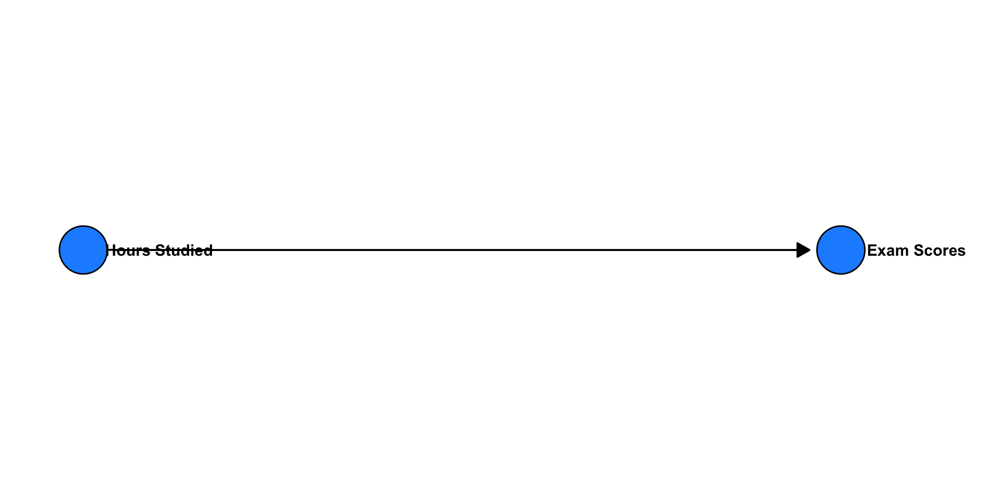
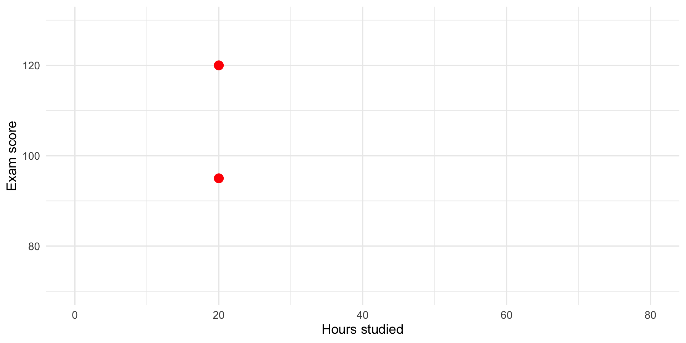
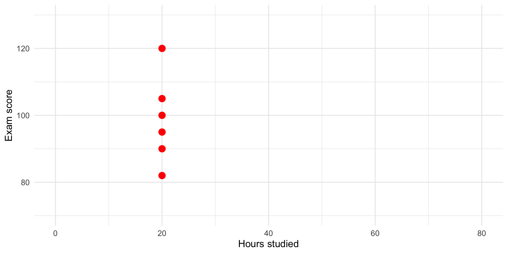
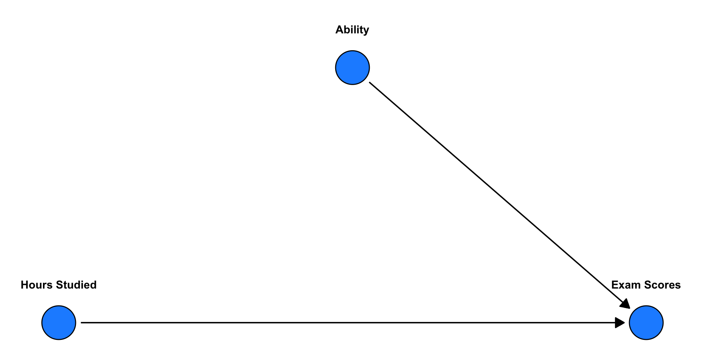
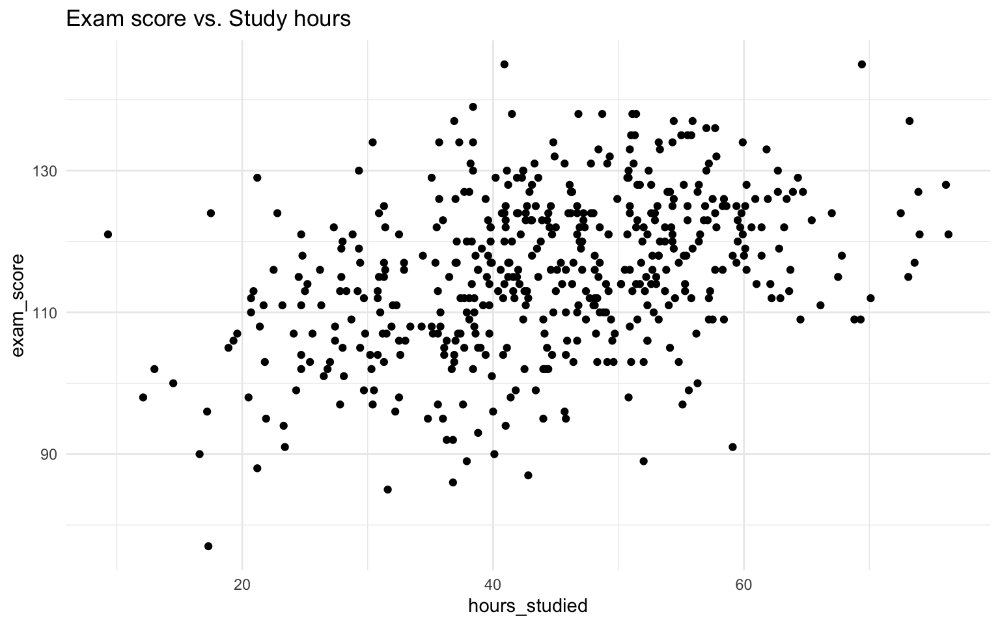
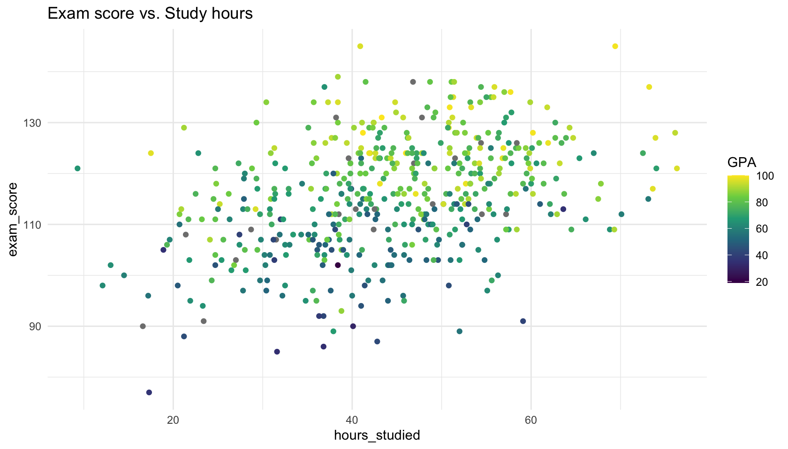
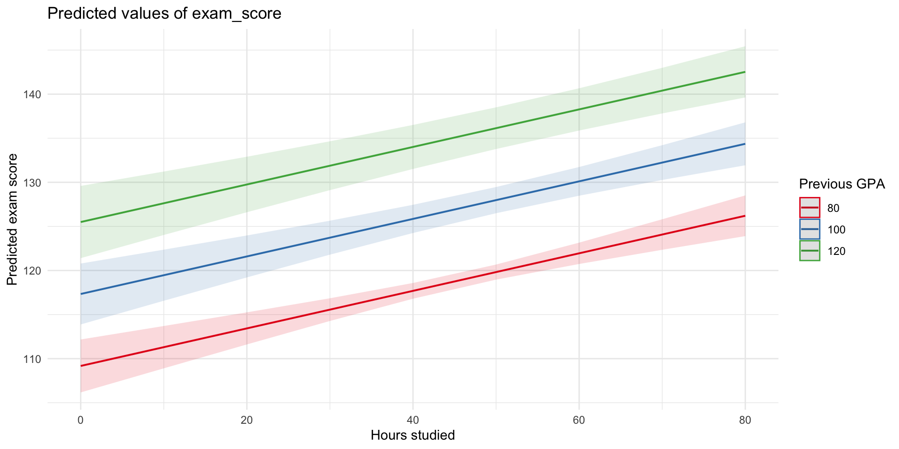
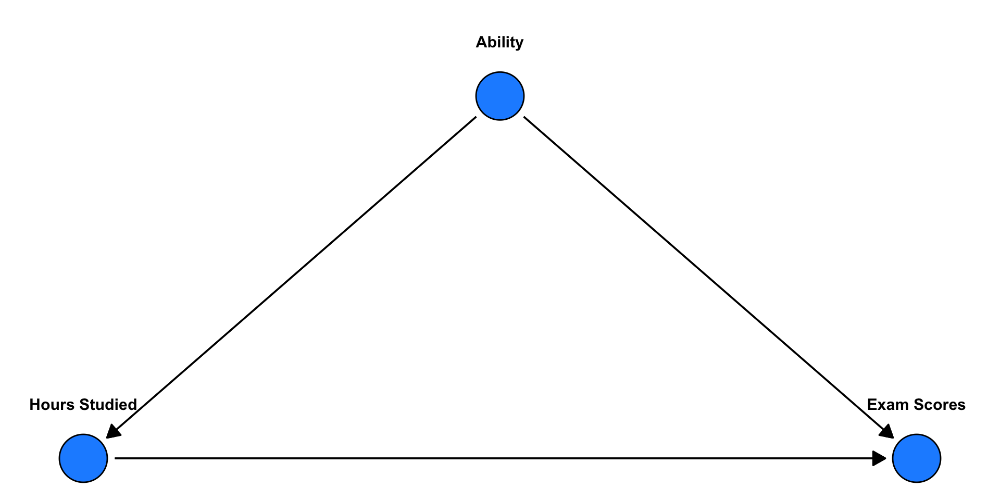
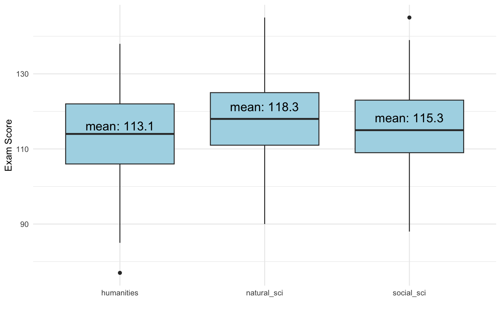

💬 Questions are welcome:
🧠 Remember:
Swedish academic culture values independent thinking and open dialogue.
Learning is a collaboration, not a one-way transmission.
Topic: Multiple Regression, Categorical Variables
Goal: Extend our regression toolkit
We learned how to:
Simulate and visualize linear relationships
Fit models like:
\(Y = \beta_0 + \beta_1 X + \varepsilon\)
Interpret coefficients:
Diagnose assumptions
Understand \(R^2\) and residuals
🧠 Example: “How does the number of hours studied relate to exam score?”
This week, we’re moving beyond simple models with just one variable.
We’ll explore:
Multiple regression
👉 How to include more than one independent variable
Controlling for other factors
👉 How to separate the effect of one variable from the influence of others
More interpretation
👉 How to interpret significance, uncertainty and importance
Categorical variables
👉 What to do when your variable isn’t continous but categorical — like field of study or gender
In Lecture 1, we called it the slope of the line.
In statistics, it’s also called β (beta), the regression coefficient, or sometimes the parameter estimate.
| Symbol / Name | Also called… |
|---|---|
| \(\beta_0\) | intercept, constant, baseline |
| \(\beta_1\) | slope, coefficient, association, effect, weight |
| \(b\) | (alternate symbol) |
When talking about variables in regression, we also have different terms.
| Role in model | Also called… |
|---|---|
| Outcome | dependent var, response, Y |
| Predictor | independent var, explanatory var, X, treatment |
| Other predictors | covariates, controls, features |
| Error | residual, disturbance, noise |
🧠 Key idea:
We’re modeling how Y depends on X, possibly while adjusting for other variables.
💡 You’ll hear different terms depending on:
The field (statistics, sociology, economics…)
The goal (describe patterns, prediction, causal inference…)
We usually add more variables for one of two reasons:
✅ Prediction
👉 To build models that can accurately guess the outcome for new cases, even if we don’t fully understand why (You will cover this more in the ML course)
✅ Inference
👉 To build better models for understanding patterns — or to get closer to causal effects
In social science, inference often means:
Describing relationships more accurately
Testing theories about how things are connected
Sometimes estimating causal effects (when possible)
Different goals = different reasons to expand the model.
🧩 Main challenge: Use some of the data to “train” and then predict on another.
In social science, we often care about the effect of one variable on another.
🧠 Some classic questions:
1. Does education reduce crime?
2. Do parental incomes shape children's educational outcomes?
3. Does neighborhood context affect life chances?
4. Does social media use cause depression?
5. Does immigration impact native wages?
6. Do marriage and family structure affect child development?
7. Does unemployment lead to worse health?
8. Does gender bias affect hiring decisions?
9. Does access to early childhood education improve long-term outcomes?
10. Does political messaging change voter behavior?But…
Does education reduce crime?
👉 Maybe people with higher education also had better childhood environments
Do parental incomes shape children’s outcomes?
👉 Or is it parental education that matters more?
Does social media cause depression?
👉 Or are people who are already struggling more drawn to social media?
Does unemployment lead to worse health?
👉 Or do people in worse health become unemployed more often?
Does gender bias affect hiring decisions?
👉 Could industry or applicant background explain part of it?
🎯 This is why we build multivariate models:
To separate overlapping influences and make more credible inferences.
🧠 So what about the classic question: Does more hours studying increases students’ exam scores? — What else might matter?

(Causal graph)
Two students both study 20 hours for the exam.
But they get different scores.
Why?

Many students both study 20 hours for the exam.
But they get different scores.
This represents more variance to be explained

🧠 So what about the classic question: Does more hours studying increases students’ exam scores? — What else might matter?



When we ask,
“Does studying more increase exam scores?”
we have to be careful who we compare.
💡 This is, when working correctly, what multiple regression does —
it let’s us ask: Among students with the same GPA, does more studying predict higher exam scores?
\[ Y = \beta_0 + \beta_1 X_1 + \beta_2 X_2 + \varepsilon \]
Call:
lm(formula = exam_score ~ hours_studied + previous_gpa, data = data)
Residuals:
Min 1Q Median 3Q Max
-27.7000 -5.5333 0.1781 5.3906 26.0899
Coefficients:
Estimate Std. Error t value Pr(>|t|)
(Intercept) 76.52935 2.06180 37.12 < 2e-16 ***
hours_studied 0.21293 0.03212 6.63 9.21e-11 ***
previous_gpa 0.40806 0.02486 16.41 < 2e-16 ***
---
Signif. codes: 0 '***' 0.001 '**' 0.01 '*' 0.05 '.' 0.1 ' ' 1
Residual standard error: 8.218 on 471 degrees of freedom
(26 observations deleted due to missingness)
Multiple R-squared: 0.4503, Adjusted R-squared: 0.448
F-statistic: 192.9 on 2 and 471 DF, p-value: < 2.2e-16For a general estimated model:
\(\widehat{y} = \widehat{\beta}_0 + \widehat{\beta}_1 x_1 + \widehat{\beta}_2 x_2\)
Correct OLS Coefficient Interpretation
“Within the observed data, a one-unit increase in \(x_1\) is associated with an average change of \(\widehat{\beta}_1\) units in \(y\), holding all other included variables constant.
The estimated coefficient has a standard error of [SE] and p-value = [p-value]. At a significance level of \(\alpha\) = 0.05, this effect is [statistically significant / not significant].
This reflects an association, not necessarily a causal effect, and the interpretation depends on the assumptions of the linear model.”
Another phrasing
“When comparing two cases that are alike in all other included predictors, the one with a 1-unit higher value of \(x_1\) is predicted to have \(\widehat{\beta}_1\) higher \(y\), on average.”
For our model:
\(\widehat{\text{exam_score}} = 76.53 + 0.21 \times \text{hours_studied} + 0.41 \times \text{GPA}\)
Correct OLS Coefficient Interpretation
Within the observed data, and conditional on the variables included in the model, a one-unit increase in hours studied is associated with an average change of 0.21 points in exam score, holding previous GPA constant.
The estimated coefficient has a standard error of 0.03 and p-value = \(<0.001\). At a significance level of \(\alpha\) = 0.05, this effect is statistically significant.
This reflects an association, not necessarily a causal effect, and the interpretation depends on the assumptions of the linear model.
Another phrasing
“When comparing two people with the same level of GPA, the one who studied one hour more is predicted to have 0.21 higher exam score, on average.”
For our model:
\(\widehat{\text{exam_score}} = 76.53 + 0.21 \times \text{hours_studied} + 0.41 \times \text{GPA}\)

Terminology Alert
In regression, controlling for, adjusting for and accounting for all mean the same thing
➡️ We include one or more variables in the model to isolate the unique effect of the independent variable, holding the rest constant.
Repetition: Why did we wish to control for GPA?
Then:

🧐 Question: If we don’t control for GPA, what might be wrong with the estimated \(\beta\) for hours studied?
If two predictors (like GPA and hours studied) are correlated, and both relate to the outcome…
✅ Multiple regression helps us adjust for this and estimate the unique contribution of each variable.
🧩 Confounding is a subtle and complex issue — often oversimplified. We’ll return to it later in the course.
| Model | Coefficient on hours_studied |
|---|---|
lm(exam_score ~ hours_studied) |
Picks up total association |
lm(exam_score ~ hours_studied + previous_gpa) |
Association holding GPA constant |
➡️ The meaning of coefficients depends on what’s in the model
When we run a regression, we get estimates for our coefficients (the slopes) —
but we also get uncertainty measures.
Call:
lm(formula = exam_score ~ hours_studied + previous_gpa, data = data)
Residuals:
Min 1Q Median 3Q Max
-27.7000 -5.5333 0.1781 5.3906 26.0899
Coefficients:
Estimate Std. Error t value Pr(>|t|)
(Intercept) 76.52935 2.06180 37.12 < 2e-16 ***
hours_studied 0.21293 0.03212 6.63 9.21e-11 ***
previous_gpa 0.40806 0.02486 16.41 < 2e-16 ***
---
Signif. codes: 0 '***' 0.001 '**' 0.01 '*' 0.05 '.' 0.1 ' ' 1
Residual standard error: 8.218 on 471 degrees of freedom
(26 observations deleted due to missingness)
Multiple R-squared: 0.4503, Adjusted R-squared: 0.448
F-statistic: 192.9 on 2 and 471 DF, p-value: < 2.2e-16These tell us how confident are we that this relationship exists in the population?
💬 In words:
If the true β were 0, what is the probability of seeing an effect at least this big (or bigger) just by chance?
🧠 Small p-value → our data are unlikely under the “no effect” world.
This suggests that the relationship in our sample probably reflects a real pattern.
🚫 But remember:
2.5 % 97.5 %
(Intercept) 72.4778929 80.5808054
hours_studied 0.1498233 0.2760388
previous_gpa 0.3591984 0.4569131The 95% confidence interval gives a range of plausible values for the true coefficient.
💬 In words:
“If we repeated this study many times, 95% of the calculated intervals would contain the true β.”
If the CI does not include 0 (the null hypothesis value), the effect is statistically significant at the 5% level (same idea as p < 0.05).
Even when an effect is statistically significant,
we should still ask: Is it meaningful?
Statistical significance → The effect is unlikely to be zero.
Substantive (practical) significance → The effect is large enough to matter in the real world.
💬 Example:
If studying one extra hour raises exam scores by 0.23 points,
this may be statistically significant — but is it educationally important?
Statistical ≠ Substantive significance.
Always interpret size and context — not just stars and p-values ⭐️
✅ Always report and discuss:
🎯 Goal: Move beyond “Is it significant?”
toward “Is it important?”
| Predictor | Estimate | 95% CI | Interpretation |
|---|---|---|---|
| Hours studied | 0.23 | [0.17, 0.30] | For each additional hour studied, exam score increases by 0.23 points, on average, holding GPA constant. The confidence interval (95%) does not contain 0 and the estimate is therefore signicant on the p<0.05 level. In substantive terms… ??? |
| GPA | 0.41 | [0.36, 0.46] | - |
Call:
lm(formula = exam_score ~ hours_studied + previous_gpa, data = data)
Residuals:
Min 1Q Median 3Q Max
-27.7000 -5.5333 0.1781 5.3906 26.0899
Coefficients:
Estimate Std. Error t value Pr(>|t|)
(Intercept) 76.52935 2.06180 37.12 < 2e-16 ***
hours_studied 0.21293 0.03212 6.63 9.21e-11 ***
previous_gpa 0.40806 0.02486 16.41 < 2e-16 ***
---
Signif. codes: 0 '***' 0.001 '**' 0.01 '*' 0.05 '.' 0.1 ' ' 1
Residual standard error: 8.218 on 471 degrees of freedom
(26 observations deleted due to missingness)
Multiple R-squared: 0.4503, Adjusted R-squared: 0.448
F-statistic: 192.9 on 2 and 471 DF, p-value: < 2.2e-16Adjusted \(R^2\) is a goodness-of-fit measurement that accounts for the number of predictors in the model.
Example
Adding irrelevant predictors may raise R² from 0.80 → 0.82,
but Adjusted R² might drop from 0.79 → 0.78 — signaling that they don’t provide much to the model.
In the world of data, not all variables are numeric.
Sometimes we want to include a categorical independent variable like:
In our data, we have a variable with three categories:
exam_score ~ fieldRegression interprets categorical variables as group differences.
Call:
lm(formula = exam_score ~ field, data = data)
Residuals:
Min 1Q Median 3Q Max
-36.123 -7.167 -0.123 7.701 29.701
Coefficients:
Estimate Std. Error t value Pr(>|t|)
(Intercept) 113.1226 0.8827 128.151 < 2e-16 ***
fieldnatural_sci 5.1758 1.2027 4.303 2.03e-05 ***
fieldsocial_sci 2.1762 1.2311 1.768 0.0777 .
---
Signif. codes: 0 '***' 0.001 '**' 0.01 '*' 0.05 '.' 0.1 ' ' 1
Residual standard error: 10.99 on 497 degrees of freedom
Multiple R-squared: 0.03656, Adjusted R-squared: 0.03269
F-statistic: 9.431 on 2 and 497 DF, p-value: 9.553e-05 Estimate Std. Error t value Pr(>|t|)
(Intercept) 113.122581 0.8827322 128.150503 0.000000e+00
fieldnatural_sci 5.175762 1.2027056 4.303432 2.026106e-05
fieldsocial_sci 2.176200 1.2311257 1.767650 7.773291e-02🧠 These are group means, but shown as a regression!

This is exactly what the regression captures.
Dummy variables can be seen as a special case of categorical variable which only has two categories: 0 and 1.
Gender is coded as a dummy in our data:
Call:
lm(formula = exam_score ~ field + gender, data = data)
Residuals:
Min 1Q Median 3Q Max
-35.499 -7.123 0.623 7.735 30.623
Coefficients:
Estimate Std. Error t value Pr(>|t|)
(Intercept) 112.499 1.021 110.210 < 2e-16 ***
fieldnatural_sci 4.765 1.226 3.886 0.000117 ***
fieldsocial_sci 1.878 1.259 1.491 0.136679
gender 1.859 1.004 1.851 0.064752 .
---
Signif. codes: 0 '***' 0.001 '**' 0.01 '*' 0.05 '.' 0.1 ' ' 1
Residual standard error: 10.99 on 477 degrees of freedom
(19 observations deleted due to missingness)
Multiple R-squared: 0.03917, Adjusted R-squared: 0.03312
F-statistic: 6.481 on 3 and 477 DF, p-value: 0.0002635For dummy variables:
“Compared to male students in Humanities…”
Call:
lm(formula = exam_score ~ field + gender + hours_studied, data = data)
Residuals:
Min 1Q Median 3Q Max
-33.345 -6.466 0.619 6.784 28.102
Coefficients:
Estimate Std. Error t value Pr(>|t|)
(Intercept) 96.80829 1.90189 50.901 < 2e-16 ***
fieldnatural_sci 5.41889 1.12727 4.807 2.06e-06 ***
fieldsocial_sci 1.91996 1.15575 1.661 0.0973 .
gender 0.91916 0.92796 0.991 0.3224
hours_studied 0.35869 0.03822 9.384 < 2e-16 ***
---
Signif. codes: 0 '***' 0.001 '**' 0.01 '*' 0.05 '.' 0.1 ' ' 1
Residual standard error: 10.02 on 471 degrees of freedom
(24 observations deleted due to missingness)
Multiple R-squared: 0.1931, Adjusted R-squared: 0.1863
F-statistic: 28.18 on 4 and 471 DF, p-value: < 2.2e-16
Call:
lm(formula = exam_score ~ field + gender + hours_studied, data = data)
Residuals:
Min 1Q Median 3Q Max
-33.345 -6.466 0.619 6.784 28.102
Coefficients:
Estimate Std. Error t value Pr(>|t|)
(Intercept) 96.80829 1.90189 50.901 < 2e-16 ***
fieldnatural_sci 5.41889 1.12727 4.807 2.06e-06 ***
fieldsocial_sci 1.91996 1.15575 1.661 0.0973 .
gender 0.91916 0.92796 0.991 0.3224
hours_studied 0.35869 0.03822 9.384 < 2e-16 ***
---
Signif. codes: 0 '***' 0.001 '**' 0.01 '*' 0.05 '.' 0.1 ' ' 1
Residual standard error: 10.02 on 471 degrees of freedom
(24 observations deleted due to missingness)
Multiple R-squared: 0.1931, Adjusted R-squared: 0.1863
F-statistic: 28.18 on 4 and 471 DF, p-value: < 2.2e-16Let’s predict the exam score for…
✅ Fit and interpret multiple regression models
lm(y ~ x1 + x2)
Understand coefficients, p-values, and confidence intervals
✅ Explain confounding and why we control for variables
→ Compare like with like
✅ Include categorical predictors
→ Intercept = reference group
→ Coefficients = group differences
✅ Move beyond significance
→ Focus on substance and context
⭐ Big Picture:
Multiple regression lets us separate overlapping causes
and move from association → credible inference.
🎯 Next Week:
Interactions & non-linearity — when effects depend on something else 🌀